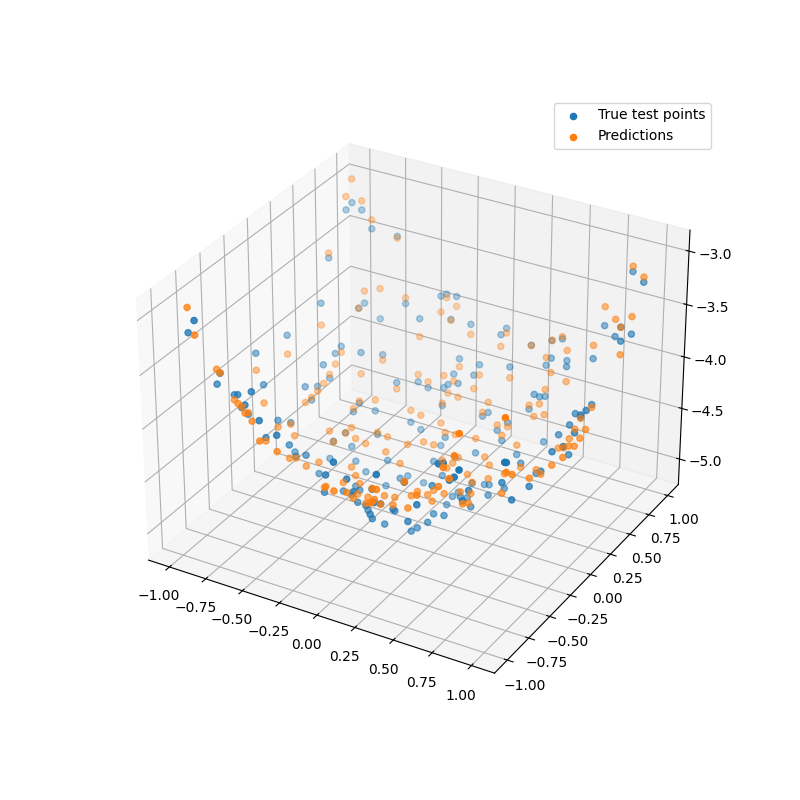
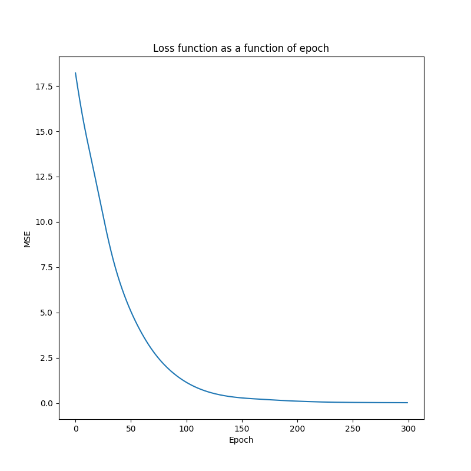
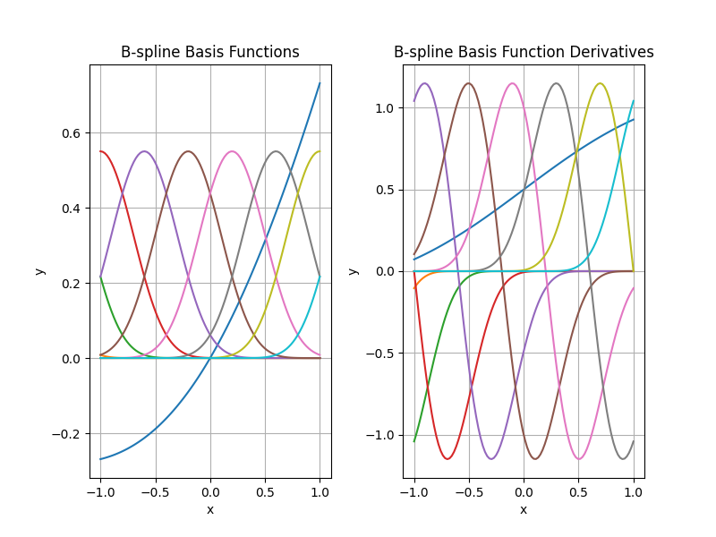

Note
Go to the end to download the full example code.
Kolmogorov-Arnold Networks
This script implements a model using Kolmogorov-Arnold networks. It fits to a simple quadratic surface using only a few parameters.
- 
- 
- 
Model summary:
Input - Output: (2)
DenseKAN - (Input, Output): (2, 2) - Parameters: 40
Tanh - Output: (2)
DenseKAN - (Input, Output): (2, 1) - Parameters: 20
Total number of parameters: 60
Epoch: 1 - Metrics: {'loss': '18.2167'}
Epoch: 2 - Metrics: {'loss': '17.8147'}
Epoch: 3 - Metrics: {'loss': '17.4217'}
Epoch: 4 - Metrics: {'loss': '17.0385'}
Epoch: 5 - Metrics: {'loss': '16.6658'}
Epoch: 6 - Metrics: {'loss': '16.3046'}
Epoch: 7 - Metrics: {'loss': '15.9559'}
Epoch: 8 - Metrics: {'loss': '15.6200'}
Epoch: 9 - Metrics: {'loss': '15.2969'}
Epoch: 10 - Metrics: {'loss': '14.9855'}
Epoch: 11 - Metrics: {'loss': '14.6838'}
Epoch: 12 - Metrics: {'loss': '14.3897'}
Epoch: 13 - Metrics: {'loss': '14.1008'}
Epoch: 14 - Metrics: {'loss': '13.8145'}
Epoch: 15 - Metrics: {'loss': '13.5289'}
Epoch: 16 - Metrics: {'loss': '13.2427'}
Epoch: 17 - Metrics: {'loss': '12.9550'}
Epoch: 18 - Metrics: {'loss': '12.6652'}
Epoch: 19 - Metrics: {'loss': '12.3733'}
Epoch: 20 - Metrics: {'loss': '12.0794'}
Epoch: 21 - Metrics: {'loss': '11.7840'}
Epoch: 22 - Metrics: {'loss': '11.4876'}
Epoch: 23 - Metrics: {'loss': '11.1908'}
Epoch: 24 - Metrics: {'loss': '10.8946'}
Epoch: 25 - Metrics: {'loss': '10.5997'}
Epoch: 26 - Metrics: {'loss': '10.3070'}
Epoch: 27 - Metrics: {'loss': '10.0174'}
Epoch: 28 - Metrics: {'loss': '9.7317'}
Epoch: 29 - Metrics: {'loss': '9.4510'}
Epoch: 30 - Metrics: {'loss': '9.1760'}
Epoch: 31 - Metrics: {'loss': '8.9077'}
Epoch: 32 - Metrics: {'loss': '8.6466'}
Epoch: 33 - Metrics: {'loss': '8.3935'}
Epoch: 34 - Metrics: {'loss': '8.1486'}
Epoch: 35 - Metrics: {'loss': '7.9121'}
Epoch: 36 - Metrics: {'loss': '7.6842'}
Epoch: 37 - Metrics: {'loss': '7.4647'}
Epoch: 38 - Metrics: {'loss': '7.2532'}
Epoch: 39 - Metrics: {'loss': '7.0494'}
Epoch: 40 - Metrics: {'loss': '6.8529'}
Epoch: 41 - Metrics: {'loss': '6.6631'}
Epoch: 42 - Metrics: {'loss': '6.4796'}
Epoch: 43 - Metrics: {'loss': '6.3020'}
Epoch: 44 - Metrics: {'loss': '6.1298'}
Epoch: 45 - Metrics: {'loss': '5.9627'}
Epoch: 46 - Metrics: {'loss': '5.8005'}
Epoch: 47 - Metrics: {'loss': '5.6429'}
Epoch: 48 - Metrics: {'loss': '5.4896'}
Epoch: 49 - Metrics: {'loss': '5.3406'}
Epoch: 50 - Metrics: {'loss': '5.1957'}
Epoch: 51 - Metrics: {'loss': '5.0546'}
Epoch: 52 - Metrics: {'loss': '4.9172'}
Epoch: 53 - Metrics: {'loss': '4.7834'}
Epoch: 54 - Metrics: {'loss': '4.6529'}
Epoch: 55 - Metrics: {'loss': '4.5258'}
Epoch: 56 - Metrics: {'loss': '4.4016'}
Epoch: 57 - Metrics: {'loss': '4.2805'}
Epoch: 58 - Metrics: {'loss': '4.1621'}
Epoch: 59 - Metrics: {'loss': '4.0465'}
Epoch: 60 - Metrics: {'loss': '3.9336'}
Epoch: 61 - Metrics: {'loss': '3.8232'}
Epoch: 62 - Metrics: {'loss': '3.7154'}
Epoch: 63 - Metrics: {'loss': '3.6101'}
Epoch: 64 - Metrics: {'loss': '3.5073'}
Epoch: 65 - Metrics: {'loss': '3.4071'}
Epoch: 66 - Metrics: {'loss': '3.3093'}
Epoch: 67 - Metrics: {'loss': '3.2141'}
Epoch: 68 - Metrics: {'loss': '3.1214'}
Epoch: 69 - Metrics: {'loss': '3.0311'}
Epoch: 70 - Metrics: {'loss': '2.9433'}
Epoch: 71 - Metrics: {'loss': '2.8579'}
Epoch: 72 - Metrics: {'loss': '2.7748'}
Epoch: 73 - Metrics: {'loss': '2.6940'}
Epoch: 74 - Metrics: {'loss': '2.6154'}
Epoch: 75 - Metrics: {'loss': '2.5390'}
Epoch: 76 - Metrics: {'loss': '2.4648'}
Epoch: 77 - Metrics: {'loss': '2.3925'}
Epoch: 78 - Metrics: {'loss': '2.3223'}
Epoch: 79 - Metrics: {'loss': '2.2539'}
Epoch: 80 - Metrics: {'loss': '2.1874'}
Epoch: 81 - Metrics: {'loss': '2.1228'}
Epoch: 82 - Metrics: {'loss': '2.0599'}
Epoch: 83 - Metrics: {'loss': '1.9987'}
Epoch: 84 - Metrics: {'loss': '1.9391'}
Epoch: 85 - Metrics: {'loss': '1.8812'}
Epoch: 86 - Metrics: {'loss': '1.8249'}
Epoch: 87 - Metrics: {'loss': '1.7701'}
Epoch: 88 - Metrics: {'loss': '1.7168'}
Epoch: 89 - Metrics: {'loss': '1.6649'}
Epoch: 90 - Metrics: {'loss': '1.6145'}
Epoch: 91 - Metrics: {'loss': '1.5655'}
Epoch: 92 - Metrics: {'loss': '1.5178'}
Epoch: 93 - Metrics: {'loss': '1.4715'}
Epoch: 94 - Metrics: {'loss': '1.4265'}
Epoch: 95 - Metrics: {'loss': '1.3828'}
Epoch: 96 - Metrics: {'loss': '1.3403'}
Epoch: 97 - Metrics: {'loss': '1.2990'}
Epoch: 98 - Metrics: {'loss': '1.2590'}
Epoch: 99 - Metrics: {'loss': '1.2201'}
Epoch: 100 - Metrics: {'loss': '1.1823'}
Epoch: 101 - Metrics: {'loss': '1.1457'}
Epoch: 102 - Metrics: {'loss': '1.1102'}
Epoch: 103 - Metrics: {'loss': '1.0757'}
Epoch: 104 - Metrics: {'loss': '1.0423'}
Epoch: 105 - Metrics: {'loss': '1.0099'}
Epoch: 106 - Metrics: {'loss': '0.9785'}
Epoch: 107 - Metrics: {'loss': '0.9481'}
Epoch: 108 - Metrics: {'loss': '0.9187'}
Epoch: 109 - Metrics: {'loss': '0.8902'}
Epoch: 110 - Metrics: {'loss': '0.8626'}
Epoch: 111 - Metrics: {'loss': '0.8359'}
Epoch: 112 - Metrics: {'loss': '0.8101'}
Epoch: 113 - Metrics: {'loss': '0.7851'}
Epoch: 114 - Metrics: {'loss': '0.7609'}
Epoch: 115 - Metrics: {'loss': '0.7376'}
Epoch: 116 - Metrics: {'loss': '0.7151'}
Epoch: 117 - Metrics: {'loss': '0.6933'}
Epoch: 118 - Metrics: {'loss': '0.6723'}
Epoch: 119 - Metrics: {'loss': '0.6520'}
Epoch: 120 - Metrics: {'loss': '0.6324'}
Epoch: 121 - Metrics: {'loss': '0.6135'}
Epoch: 122 - Metrics: {'loss': '0.5953'}
Epoch: 123 - Metrics: {'loss': '0.5777'}
Epoch: 124 - Metrics: {'loss': '0.5608'}
Epoch: 125 - Metrics: {'loss': '0.5445'}
Epoch: 126 - Metrics: {'loss': '0.5288'}
Epoch: 127 - Metrics: {'loss': '0.5138'}
Epoch: 128 - Metrics: {'loss': '0.4992'}
Epoch: 129 - Metrics: {'loss': '0.4853'}
Epoch: 130 - Metrics: {'loss': '0.4718'}
Epoch: 131 - Metrics: {'loss': '0.4589'}
Epoch: 132 - Metrics: {'loss': '0.4465'}
Epoch: 133 - Metrics: {'loss': '0.4346'}
Epoch: 134 - Metrics: {'loss': '0.4232'}
Epoch: 135 - Metrics: {'loss': '0.4122'}
Epoch: 136 - Metrics: {'loss': '0.4016'}
Epoch: 137 - Metrics: {'loss': '0.3915'}
Epoch: 138 - Metrics: {'loss': '0.3818'}
Epoch: 139 - Metrics: {'loss': '0.3726'}
Epoch: 140 - Metrics: {'loss': '0.3637'}
Epoch: 141 - Metrics: {'loss': '0.3551'}
Epoch: 142 - Metrics: {'loss': '0.3469'}
Epoch: 143 - Metrics: {'loss': '0.3391'}
Epoch: 144 - Metrics: {'loss': '0.3316'}
Epoch: 145 - Metrics: {'loss': '0.3244'}
Epoch: 146 - Metrics: {'loss': '0.3176'}
Epoch: 147 - Metrics: {'loss': '0.3110'}
Epoch: 148 - Metrics: {'loss': '0.3046'}
Epoch: 149 - Metrics: {'loss': '0.2986'}
Epoch: 150 - Metrics: {'loss': '0.2928'}
Epoch: 151 - Metrics: {'loss': '0.2872'}
Epoch: 152 - Metrics: {'loss': '0.2819'}
Epoch: 153 - Metrics: {'loss': '0.2767'}
Epoch: 154 - Metrics: {'loss': '0.2718'}
Epoch: 155 - Metrics: {'loss': '0.2671'}
Epoch: 156 - Metrics: {'loss': '0.2625'}
Epoch: 157 - Metrics: {'loss': '0.2580'}
Epoch: 158 - Metrics: {'loss': '0.2538'}
Epoch: 159 - Metrics: {'loss': '0.2496'}
Epoch: 160 - Metrics: {'loss': '0.2456'}
Epoch: 161 - Metrics: {'loss': '0.2416'}
Epoch: 162 - Metrics: {'loss': '0.2378'}
Epoch: 163 - Metrics: {'loss': '0.2340'}
Epoch: 164 - Metrics: {'loss': '0.2303'}
Epoch: 165 - Metrics: {'loss': '0.2267'}
Epoch: 166 - Metrics: {'loss': '0.2230'}
Epoch: 167 - Metrics: {'loss': '0.2194'}
Epoch: 168 - Metrics: {'loss': '0.2158'}
Epoch: 169 - Metrics: {'loss': '0.2123'}
Epoch: 170 - Metrics: {'loss': '0.2087'}
Epoch: 171 - Metrics: {'loss': '0.2051'}
Epoch: 172 - Metrics: {'loss': '0.2014'}
Epoch: 173 - Metrics: {'loss': '0.1978'}
Epoch: 174 - Metrics: {'loss': '0.1941'}
Epoch: 175 - Metrics: {'loss': '0.1904'}
Epoch: 176 - Metrics: {'loss': '0.1867'}
Epoch: 177 - Metrics: {'loss': '0.1829'}
Epoch: 178 - Metrics: {'loss': '0.1792'}
Epoch: 179 - Metrics: {'loss': '0.1755'}
Epoch: 180 - Metrics: {'loss': '0.1718'}
Epoch: 181 - Metrics: {'loss': '0.1682'}
Epoch: 182 - Metrics: {'loss': '0.1646'}
Epoch: 183 - Metrics: {'loss': '0.1610'}
Epoch: 184 - Metrics: {'loss': '0.1576'}
Epoch: 185 - Metrics: {'loss': '0.1542'}
Epoch: 186 - Metrics: {'loss': '0.1508'}
Epoch: 187 - Metrics: {'loss': '0.1476'}
Epoch: 188 - Metrics: {'loss': '0.1444'}
Epoch: 189 - Metrics: {'loss': '0.1412'}
Epoch: 190 - Metrics: {'loss': '0.1382'}
Epoch: 191 - Metrics: {'loss': '0.1351'}
Epoch: 192 - Metrics: {'loss': '0.1322'}
Epoch: 193 - Metrics: {'loss': '0.1292'}
Epoch: 194 - Metrics: {'loss': '0.1263'}
Epoch: 195 - Metrics: {'loss': '0.1235'}
Epoch: 196 - Metrics: {'loss': '0.1207'}
Epoch: 197 - Metrics: {'loss': '0.1180'}
Epoch: 198 - Metrics: {'loss': '0.1153'}
Epoch: 199 - Metrics: {'loss': '0.1127'}
Epoch: 200 - Metrics: {'loss': '0.1102'}
Epoch: 201 - Metrics: {'loss': '0.1077'}
Epoch: 202 - Metrics: {'loss': '0.1053'}
Epoch: 203 - Metrics: {'loss': '0.1030'}
Epoch: 204 - Metrics: {'loss': '0.1006'}
Epoch: 205 - Metrics: {'loss': '0.0984'}
Epoch: 206 - Metrics: {'loss': '0.0961'}
Epoch: 207 - Metrics: {'loss': '0.0940'}
Epoch: 208 - Metrics: {'loss': '0.0918'}
Epoch: 209 - Metrics: {'loss': '0.0896'}
Epoch: 210 - Metrics: {'loss': '0.0875'}
Epoch: 211 - Metrics: {'loss': '0.0854'}
Epoch: 212 - Metrics: {'loss': '0.0834'}
Epoch: 213 - Metrics: {'loss': '0.0813'}
Epoch: 214 - Metrics: {'loss': '0.0793'}
Epoch: 215 - Metrics: {'loss': '0.0774'}
Epoch: 216 - Metrics: {'loss': '0.0755'}
Epoch: 217 - Metrics: {'loss': '0.0736'}
Epoch: 218 - Metrics: {'loss': '0.0718'}
Epoch: 219 - Metrics: {'loss': '0.0700'}
Epoch: 220 - Metrics: {'loss': '0.0683'}
Epoch: 221 - Metrics: {'loss': '0.0667'}
Epoch: 222 - Metrics: {'loss': '0.0651'}
Epoch: 223 - Metrics: {'loss': '0.0636'}
Epoch: 224 - Metrics: {'loss': '0.0621'}
Epoch: 225 - Metrics: {'loss': '0.0607'}
Epoch: 226 - Metrics: {'loss': '0.0594'}
Epoch: 227 - Metrics: {'loss': '0.0581'}
Epoch: 228 - Metrics: {'loss': '0.0568'}
Epoch: 229 - Metrics: {'loss': '0.0556'}
Epoch: 230 - Metrics: {'loss': '0.0545'}
Epoch: 231 - Metrics: {'loss': '0.0534'}
Epoch: 232 - Metrics: {'loss': '0.0523'}
Epoch: 233 - Metrics: {'loss': '0.0513'}
Epoch: 234 - Metrics: {'loss': '0.0503'}
Epoch: 235 - Metrics: {'loss': '0.0494'}
Epoch: 236 - Metrics: {'loss': '0.0485'}
Epoch: 237 - Metrics: {'loss': '0.0476'}
Epoch: 238 - Metrics: {'loss': '0.0468'}
Epoch: 239 - Metrics: {'loss': '0.0460'}
Epoch: 240 - Metrics: {'loss': '0.0452'}
Epoch: 241 - Metrics: {'loss': '0.0444'}
Epoch: 242 - Metrics: {'loss': '0.0437'}
Epoch: 243 - Metrics: {'loss': '0.0430'}
Epoch: 244 - Metrics: {'loss': '0.0423'}
Epoch: 245 - Metrics: {'loss': '0.0417'}
Epoch: 246 - Metrics: {'loss': '0.0411'}
Epoch: 247 - Metrics: {'loss': '0.0404'}
Epoch: 248 - Metrics: {'loss': '0.0398'}
Epoch: 249 - Metrics: {'loss': '0.0393'}
Epoch: 250 - Metrics: {'loss': '0.0387'}
Epoch: 251 - Metrics: {'loss': '0.0382'}
Epoch: 252 - Metrics: {'loss': '0.0376'}
Epoch: 253 - Metrics: {'loss': '0.0371'}
Epoch: 254 - Metrics: {'loss': '0.0366'}
Epoch: 255 - Metrics: {'loss': '0.0361'}
Epoch: 256 - Metrics: {'loss': '0.0357'}
Epoch: 257 - Metrics: {'loss': '0.0352'}
Epoch: 258 - Metrics: {'loss': '0.0347'}
Epoch: 259 - Metrics: {'loss': '0.0343'}
Epoch: 260 - Metrics: {'loss': '0.0339'}
Epoch: 261 - Metrics: {'loss': '0.0335'}
Epoch: 262 - Metrics: {'loss': '0.0331'}
Epoch: 263 - Metrics: {'loss': '0.0327'}
Epoch: 264 - Metrics: {'loss': '0.0323'}
Epoch: 265 - Metrics: {'loss': '0.0319'}
Epoch: 266 - Metrics: {'loss': '0.0316'}
Epoch: 267 - Metrics: {'loss': '0.0312'}
Epoch: 268 - Metrics: {'loss': '0.0309'}
Epoch: 269 - Metrics: {'loss': '0.0305'}
Epoch: 270 - Metrics: {'loss': '0.0302'}
Epoch: 271 - Metrics: {'loss': '0.0299'}
Epoch: 272 - Metrics: {'loss': '0.0296'}
Epoch: 273 - Metrics: {'loss': '0.0293'}
Epoch: 274 - Metrics: {'loss': '0.0290'}
Epoch: 275 - Metrics: {'loss': '0.0287'}
Epoch: 276 - Metrics: {'loss': '0.0284'}
Epoch: 277 - Metrics: {'loss': '0.0282'}
Epoch: 278 - Metrics: {'loss': '0.0279'}
Epoch: 279 - Metrics: {'loss': '0.0276'}
Epoch: 280 - Metrics: {'loss': '0.0274'}
Epoch: 281 - Metrics: {'loss': '0.0271'}
Epoch: 282 - Metrics: {'loss': '0.0269'}
Epoch: 283 - Metrics: {'loss': '0.0267'}
Epoch: 284 - Metrics: {'loss': '0.0264'}
Epoch: 285 - Metrics: {'loss': '0.0262'}
Epoch: 286 - Metrics: {'loss': '0.0260'}
Epoch: 287 - Metrics: {'loss': '0.0258'}
Epoch: 288 - Metrics: {'loss': '0.0256'}
Epoch: 289 - Metrics: {'loss': '0.0254'}
Epoch: 290 - Metrics: {'loss': '0.0252'}
Epoch: 291 - Metrics: {'loss': '0.0250'}
Epoch: 292 - Metrics: {'loss': '0.0248'}
Epoch: 293 - Metrics: {'loss': '0.0246'}
Epoch: 294 - Metrics: {'loss': '0.0244'}
Epoch: 295 - Metrics: {'loss': '0.0242'}
Epoch: 296 - Metrics: {'loss': '0.0241'}
Epoch: 297 - Metrics: {'loss': '0.0239'}
Epoch: 298 - Metrics: {'loss': '0.0237'}
Epoch: 299 - Metrics: {'loss': '0.0235'}
Epoch: 300 - Metrics: {'loss': '0.0234'}
import torch
import matplotlib.pyplot as plt
from DLL.DeepLearning.Layers._DenseKAN import _get_basis_functions, _NeuronKAN
from DLL.DeepLearning.Layers import DenseKAN
from DLL.DeepLearning.Layers.Activations import Tanh
from DLL.DeepLearning.Model import Model
from DLL.DeepLearning.Optimisers import ADAM
from DLL.DeepLearning.Losses import MSE
from DLL.DeepLearning.Initialisers import Xavier_Normal
from DLL.Data.Preprocessing import data_split
# X = torch.linspace(-1, 1, 100).unsqueeze(1)
# y = torch.sin(4 * X).squeeze()
# X = torch.linspace(-1, 1, 50).unsqueeze(1)
# y = (0.5 * torch.sin(4 * X) * torch.exp(-X - 1) + 0.5).squeeze()
n = 30
X, Y = torch.meshgrid(torch.linspace(-1, 1, n), torch.linspace(-1, 1, n), indexing="xy")
x = torch.stack((X.flatten(), Y.flatten()), dim=1)
y = X.flatten() ** 2 + Y.flatten() ** 2 + 0.1 * torch.randn(size=Y.flatten().size()) - 5
X, y, _, _, X_test, y_test = data_split(x, y, train_split=0.8, validation_split=0.0)
model = Model(2)
# model.add(DenseKAN(1, activation=Tanh(), initialiser=Xavier_Normal()))
model.add(DenseKAN(2, activation=Tanh(), initialiser=Xavier_Normal()))
# model.add(DenseKAN(2, activation=Tanh(), initialiser=Xavier_Normal()))
model.add(DenseKAN(0, initialiser=Xavier_Normal()))
model.compile(ADAM(0.01), MSE())
model.summary()
history = model.fit(X, y, epochs=300, verbose=True)
# X_test = 2 * torch.rand_like(X) - 1
# y_test = torch.sin(4 * X_test).squeeze()
# X_test = 2 * torch.rand_like(X) - 1
# y_test = (0.5 * torch.sin(4 * X_test) * torch.exp(-X_test - 1) + 0.5).squeeze()
# plt.figure()
# plt.scatter(X_test, y_test, label="True test points")
# plt.scatter(X_test, model.predict(X_test), label="Predictions")
# plt.scatter(X, y, label="True train points")
# plt.scatter(X, model.predict(X), label="Predicted train points")
fig = plt.figure(figsize=(8, 8))
ax = fig.add_subplot(111, projection='3d')
ax.scatter(X_test[:, 0], X_test[:, 1], y_test, label="True test points")
ax.scatter(X_test[:, 0], X_test[:, 1], model.predict(X_test), label="Predictions")
plt.legend()
plt.figure(figsize=(8, 8))
plt.plot(history["loss"])
plt.title("Loss function as a function of epoch")
plt.ylabel("MSE")
plt.xlabel("Epoch")
plt.show()
n_fun = 10
basis_funcs, basis_func_derivatives = _get_basis_functions(n_fun, degree=5, bounds=(-1, 1))
x = torch.linspace(-1, 1, 100).unsqueeze(1)
fig, ax = plt.subplots(1, 2, figsize=(8, 6))
plt.subplots_adjust(wspace=0.3)
for i in range(n_fun):
basis_values = basis_funcs[i](x)
derivative_values = basis_func_derivatives[i](x)
ax[0].plot(x.squeeze(1), basis_values)
ax[1].plot(x, derivative_values)
ax[0].set_title("B-spline Basis Functions")
ax[0].set_xlabel("x")
ax[0].set_ylabel("y")
ax[0].grid()
ax[1].set_title("B-spline Basis Function Derivatives")
ax[1].set_xlabel("x")
ax[1].set_ylabel("y")
ax[1].grid()
plt.show()
Total running time of the script: (0 minutes 11.222 seconds)